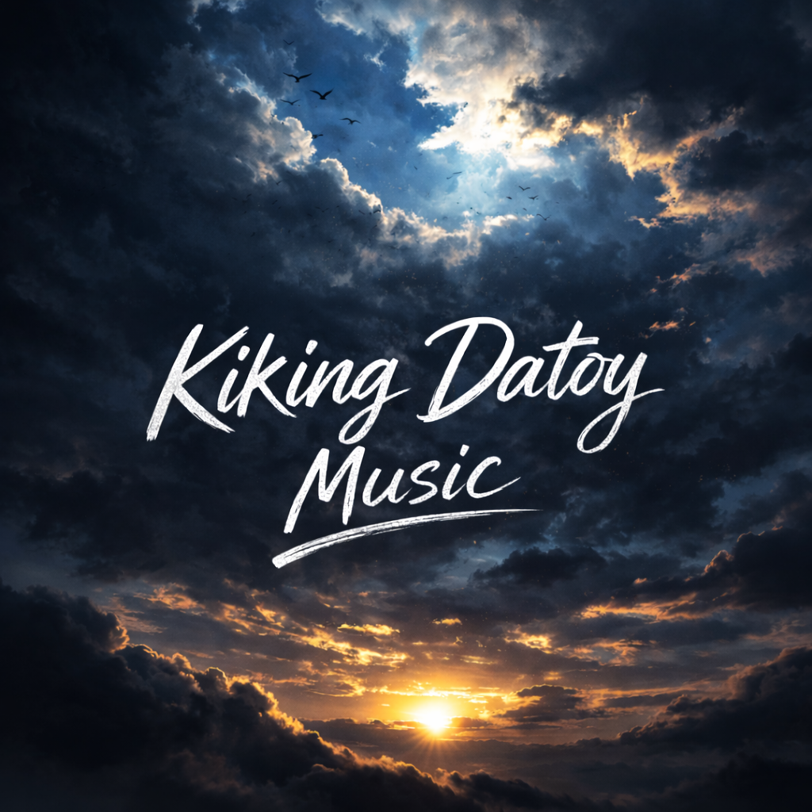

Every word comes from personal experiences, emotions, and reflections about love, faith, and character. I made this for those who can relate, who are fighting silent battles, and who continue to stay strong.
Thank you for supporting my journey and being part of this dream. — Kiking Datoy VlogVerse 1: Kada-adlaw nga pagpanginabuhi Amo gyud kanunay gipaningkamotan Bisan kapoy na ang lawas ug hunahuna Padayon gihapon, dili mohunong Verse 2: Kalisod sa kinabuhi among giatubang Luha ug kasakit, kauban sa dalan Apan sa matag lakang nga among buhaton Adunay kusog nga nagagikan sa paglaom Chorus: Kay dili mawala ang paglaom Bisan unsa pa kabug-at sa kahimtangan Ang pagpaningkamot adunay kalipay Nga dili mabaylo bisan unsang sapi Verse 3: Sa kahayag sa buntag, bag-ong sugod Mga damgo namo among gikulit Bisan hinay ang lakang, sigurado Padulong sa kaugmaon nga among gihandom Bridge: Kung usahay maluya ang kasingkasing Ug ang kalibutan murag mosukol Hinumduman namo ang rason sa pagbangon Ang pamilya, damgo, ug kaugalingon Final Chorus: Dili gyud mawala ang paglaom Kay sa paningkamot naa ang kalipay Bisan walay sapi nga mapakita Ang kalinaw sa kasingkasing mao’y tinuod nga bahandi Outro: Kada-adlaw among atubangon Ang kinabuhi nga puno sa pagsulay Apan sa pagpaningkamot ug paglaom Makaplagan ang tinuod nga kalipay